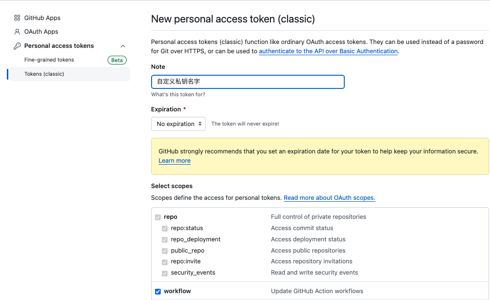
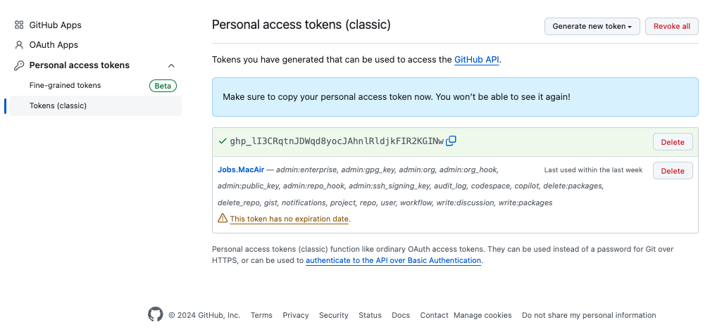
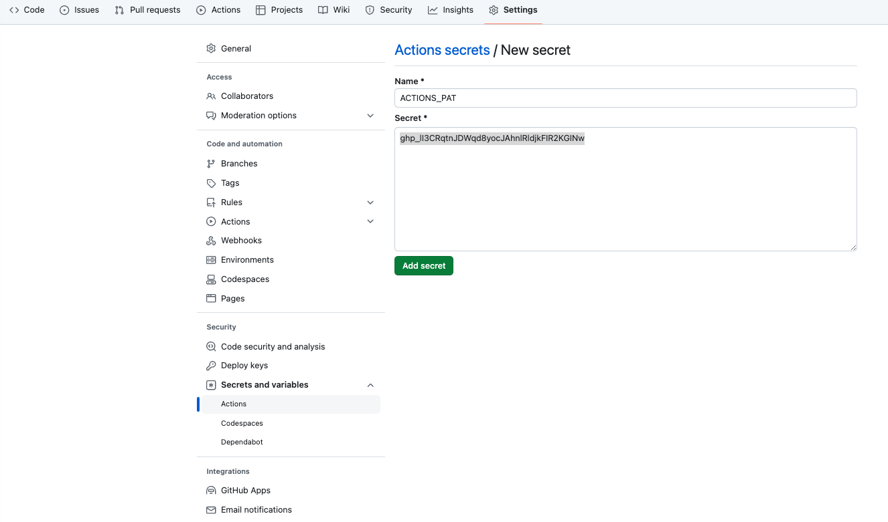
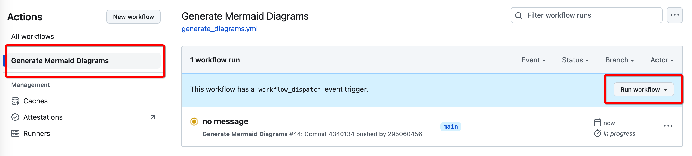

GitHub.workflow（工作流）的使用#
一、介绍 GitHub.workflow#
-
通俗一点来讲，就是GitHub不仅提供存放代码的服务，还提供了一个虚拟机环境
- 运行GitHub.workflow需要在这台远程的GitHub虚拟机上安装必要的环境
-
GitHub Actions 是 GitHub 提供的一项服务，它允许您在 GitHub 仓库中定义和执行自动化工作流
-
这些工作流由事件触发，可以执行各种任务，例如持续集成（CI）、持续交付（CD）、测试、构建、部署等
-
工作流文件位于仓库的
.github/workflows目录下 -
可以在本地测试工作流是否正常工作
brew install act -
名词解释：
- 工作流 (Workflow)：工作流是由 YAML 文件定义的一系列自动化任务
- 事件 (Event)：事件是触发工作流的条件，例如代码推送（push）、创建 Pull Request、计划任务等
- 作业 (Job)：作业是工作流中可并行运行的一组步骤，每个作业在一个新的虚拟机中运行
- 步骤 (Step)：步骤是作业中的单个任务，可以执行脚本或使用 GitHub Actions 社区提供的预定义动作
- 运行器 (Runner)：运行器是执行作业的服务器。GitHub 提供托管的运行器，用户也可以自托管运行器
-
参考资源
二、工作方式#
-
本地环境配置
-
brew install npm brew install chromium -
全局使用
npm install -g @mermaid-js/mermaid-cli在特定的项目中使用。定位项目根目录
npm install @mermaid-js/mermaid-cli -
➜ JobsOCBaseConfigDemo git:(main) ✗ npx mmdc -i README.md -o diagram.png Found 2 mermaid charts in Markdown input [@zenuml/core] Store is a function and is not initiated in 1 second. [@zenuml/core] Store is a function and is not initiated in 1 second. ✅ ./diagram-1.png ✅ ./diagram-2.png
-
-
在项目根目录建立**
.github→workflows→generate_diagrams.yml**-
generate_diagrams.yml。对于目前这个工作流脚本，需要保证在对应的*.md文件里面有对应的mermaid标签，否则运行会失败name: Generate Mermaid Diagrams on: push: branches: - main pull_request: branches: - main workflow_dispatch: # 允许手动触发 jobs: build: runs-on: ubuntu-latest permissions: contents: write # 对当前github仓库具有写的权限 steps: - name: Checkout repository uses: actions/checkout@v2 with: token: ${{ secrets.PAT }} # 计划稍后使用自己的 PAT `git push` 对不同的存储库执行操作 - name: Setup Node.js uses: actions/setup-node@v3 with: node-version: '20' # 使用最新版本的 Node.js - name: Install dependencies run: | sudo apt-get update sudo apt-get install -y chromium-browser npm install -g @mermaid-js/mermaid-cli - name: Generate Diagrams run: | npx mmdc -i README.md -o diagram.png ls -la # 列出当前目录中的文件 - name: Show current directory structure run: ls -R - name: Commit and push diagrams if: success() run: | git config --global user.name 'github-actions' git config --global user.email 'github-actions@github.com' git add diagram-*.png git commit -m 'Auto-Generate Mermaid diagrams' git push https://${{ github.actor }}:${{ secrets.PAT }}@github.com/${{ github.repository }}.git HEAD:main
-
-
只会在Github云上执行，而不是本地机器执行。最后将执行结果
git pull下来➜ JobsOCBaseConfigDemo git:(main) git add .github/workflows/generate_diagrams.yml git commit -m "Update GitHub Actions workflow to use PAT for pushing changes" git push origin main [main 148dab7] Update GitHub Actions workflow to use PAT for pushing changes 1 file changed, 2 insertions(+), 3 deletions(-) Enumerating objects: 9, done. Counting objects: 100% (9/9), done. Delta compression using up to 8 threads Compressing objects: 100% (3/3), done. Writing objects: 100% (5/5), 494 bytes | 494.00 KiB/s, done. Total 5 (delta 2), reused 0 (delta 0), pack-reused 0 remote: Resolving deltas: 100% (2/2), completed with 2 local objects. To github.com:295060456/JobsOCBaseConfigDemo.git 79dd87d..148dab7 main -> main -
获得与本机相关联的私钥
-
https://github.com/settings/profile→https://github.com/settings/apps→https://github.com/settings/tokens -
workflow选项打钩✅

-
得到私钥（牢记，不得外泄）

-
-
在Github云中，具体的项目里面进行配置。点按
New repository secret按钮
-
填写
Actions secrets。Git Actions机器人需要有操作权限
Name中填写ACTIONS_PAT;Secret中填写秘钥
手动启动#
